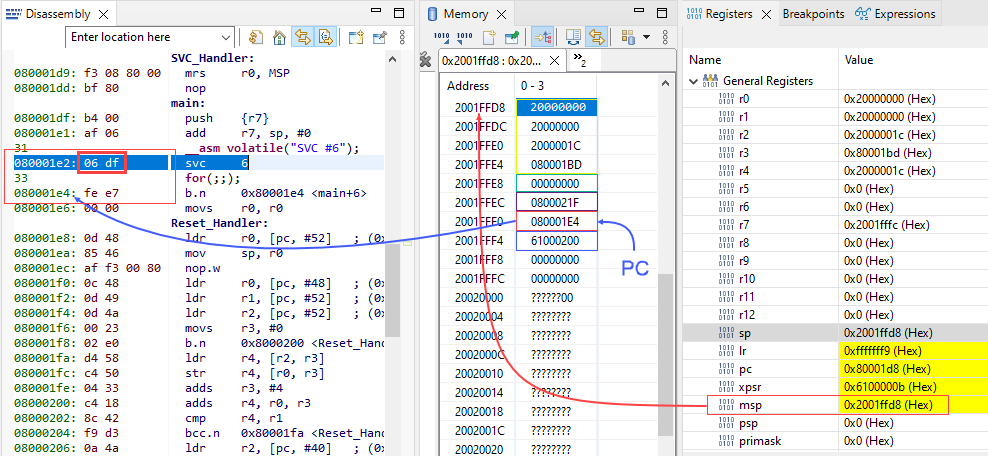
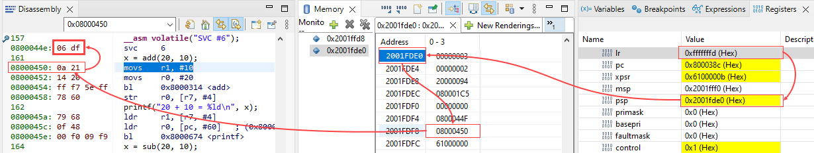

Exceptions for System-level Services
ARM Cortex-M supports 2 important System-level service exceptions, Supervisor Call (SVC) and Pendable Service (PendSV). These exceptions allow user application to request privileged operations from an Operating System, and help OS to carry out Context Switching between tasks.
Last update: 2022-05-19
Table of Content
STM32-Tutorials F411RE_SVC_Handler.zip
System-level Services#
On an Operating System, tasks are work that can be handler in parallel. User Tasks usually are assigned to run in Unprivileged level, while System Tasks are running in Privileged level. Many resources are protected by OS Kernel (by Memory Management/Protection Unit), and Unprivileged tasks can not access them.
- Supervisor Call (SVC) exception allows User Task to request Privileged operations or access to system resource
- Pendable Service Call (PendSV) exception allows Operating System to carry out Context Switching between tasks when no other exceptions are active
| Exception Number | IRQ Number | Exception Type | Priority | Function |
|---|---|---|---|---|
| 11 | -5 | SVCall | Configurable | System Service Call when call SVC instruction |
| 12 | Debug | Configurable | Debug monitor (via SWD) | |
| 13 | Reserved | — | Reserved | |
| 14 | -2 | PendSV | Configurable | For context switching in an OS |
| 15 | -1 | SysTick | Configurable | System Timer |
Supervisor Call (SVC)#
The SVC Handler executes right after the SVC instruction is executed, unless there is a higher priority exception arrives at the same time.
SVC instruction is always used along with a number, which can be used to identify the request type.
__asm volatile("SVC #0"); // call SVC 0
The OS will have a lookup table of SVC numbers and call to the corresponding handler of the request number.
Extract the SVC Number#
The declaration of void SVC_Handler(void) does not accept any parameter, however, SVC Handler needs to know its SVC number.
In the SVC Handler, we have to fetch the opcode of the SVC instruction and extract the SVC number. To fetch the opcode, we need to know the address of that instruction.
When an exception occurs, processor automatically saves the Stack Frame which has the address of next instruction of the SVC instruction in PC slot. We can go back that address, and get the opcode easily.
A normal function call always has Prologue and Epilogue sequences added by compiler. In the Prologue, some line of code is added to prepare the stack for the function. However, that action will change the Stack Pointer value. Therefore, a naked function should be used to keep the Stack Pointer value.
SVC Call in Main Stack
Example code to analyze the Stack Frame and find Opcode:
__attribute__ ((naked)) void SVC_Handler(void) {
__asm volatile("MRS R0, MSP");
}
int main(void)
{
__asm volatile("SVC #6");
/* Loop forever */
for(;;);
}

We find out the MSP is at 0x2001ffd8 which stores the R0 register, go back 6 stack slots, we have the PC with value 0x080001E4 which is the next instruction at 0x080001E2: SVC 6 with the opcode 06df.
To extract the opcode, we can do use a pointer type of byte as below:
__attribute__ ((naked)) void SVC_Handler(void) {
__asm volatile("MRS R0, MSP"); // save MSP stack pointer value
__asm volatile("B SVC_Handler_main"); // pass R0 as the argument
}
void SVC_Handler_main(uint32_t* pMSP) {
// get the address of the instruction saved in PC
uint8_t *pInstruction = (uint8_t*)(pMSP[6]);
// go back 2 bytes (16-bit opcode)
pInstruction -= 2;
// get the opcode, in little endian
uint8_t svc_num = *pInstruction;
switch(svc_num) {
default:
break;
}
}
SVC Call in Process Stack
When Process Stack is used for user code, the Stack Frame is saved to Process Stack, then the processor will automatically switch to Main Stack.
On an ARM Cortex M series device, the link register (LR or R14) is a core register that stores the return address, such as when making a function call. In the case of an exception, the return address is pushed onto the stack by hardware and the LR is set to EXC_RETURN (0xFFFFFFF1, 0xFFFFFFF9, or 0xFFFFFFFD).
When debugging exceptions such as hard faults, reading the LR is necessary to determine which stack pointer was used when the exception occurred. We will test the bit[2] of the LR value to see if it is 1 then PSP is used.
| EXC_RETURN | Description |
|---|---|
| 0xFFFFFFF1 | Return to Handler mode. |
| Exception return gets state from the main stack. | |
| Execution uses MSP after return. | |
| 0xFFFFFFF9 | Return to Thread mode. |
| Exception Return get state from the main stack. | |
| Execution uses MSP after return. | |
| 0xFFFFFFFD | Return to Thread mode. |
| Exception return gets state from the process stack. | |
| Execution uses PSP after return. | |
| All other values | Reserved. |
Example code to analyze the Stack Frame and find Opcode:
ENTRY(Reset_Handler)
_estack = ORIGIN(RAM) + LENGTH(RAM); /* end of "RAM" Ram type memory */
_Min_Heap_Size = 0x200; /* required amount of heap */
_Min_Stack_Size = 0x400; /* required amount of stack */
_psp_stack = _estack - _Min_Stack_Size / 2;
__attribute__((naked)) void changeStackToPSP(void) {
// change PSP
__asm volatile("LDR R0, =_psp_stack");
__asm volatile("MSR PSP, R0");
// set SPSEL bit
__asm volatile("MRS R1, CONTROL");
__asm volatile("ORR R1, R1, #2");
__asm volatile("MSR CONTROL, R1");
// return
__asm volatile("BX LR");
}
__attribute__ ((naked)) void SVC_Handler(void) {
__asm volatile("MRS R0, MSP");
__asm volatile("MRS R1, PSP");
}
int main(void)
{
changeStackToPSP();
__asm volatile("SVC #6");
/* Loop forever */
for(;;);
}
In case of using Process Stack, the LR value is 0xFFFFFFFD, we will use PSP to trace back to the SVC Opcode.

Complete code of extracting SVC number
__attribute__ ((naked)) void SVC_Handler(void) {
__asm volatile("TST LR, 4"); // check LR to know which stack is used
__asm volatile("ITE EQ"); // 2 next instructions are conditional
__asm volatile("MRSEQ R0, MSP"); // save MSP if bit 2 is 0
__asm volatile("MRSNE R0, PSP"); // save PSP if bit 2 is 1
__asm volatile("B SVC_Handler_main"); // pass R0 as the argument
}
void SVC_Handler_main(uint32_t* SP) {
// get the address of the instruction saved in PC
uint8_t *pInstruction = (uint8_t*)(SP[6]);
// go back 2 bytes (16-bit opcode)
pInstruction -= 2;
// get the opcode, in little endian
uint8_t svc_num = *pInstruction;
switch(svc_num) {
}
}
Return value from SVC#
The Procedure Call Standard for Arm Architecture has defined that:
The general-purpose registers
R0-R3are used to pass arguments to a function and also return values.
Those registers are pushed on the stack when function enters, and then popped back to registers when function exits. We have the Stack Frame pointer, so we can read or write to the stack slot of those registers.
int main(void) {
int x = add(20, 10); // save 20 and 10 to R0, R1
}
int32_t add(int32_t x, int32_t y) {
int32_t result;
// call SVC
__asm volatile("SVC #0"); // R0, R1 are saved into stack
// copy returned value from R0 to variable
__asm volatile("MOV %0, R0": "=r"(result));
// return
return result;
}
void SVC_Handler_main(uint32_t* SP) {
...
switch(svc_num) {
case 0: // add
{
int32_t x = SP[0]; // Argument 0 at R0 saved at MSP
int32_t y = SP[1]; // Argument 1 at R1 saved at MSP+1
int32_t z = x + y;
SP[0] = z; // Return value saved back to R0 at MSP
}
...
Example#
In this example, we will create 4 system calls: add, sub, mul and div. The user application run in unprivileged level will call to SVC 0 to SVC 3 to execute the corresponding system call and get the result.
The below code runs the application in Thread Mode using Process Stack with Unprivileged Access. SVC Handler will run in Handler Mode using Main Stack with Privileged Access.
#include <stdint.h>
#include <stdio.h>
/* ITM register addresses */
#define ITM_STIMULUS_PORT0 *((volatile uint32_t*) 0xE0000000 )
/* Send a char through ITM */
void ITM_SendChar(uint8_t ch) {
// read FIFO status in bit [0]:
while(!(ITM_STIMULUS_PORT0 & 1));
//Write to ITM stimulus port0
ITM_STIMULUS_PORT0 = ch;
}
/* Override low-level _write system call */
int _write(int file, char *ptr, int len) {
int DataIdx;
for (DataIdx = 0; DataIdx < len; DataIdx++) {
ITM_SendChar(*ptr++);
}
return len;
}
__attribute__((naked)) void changeStackToPSP(void) {
// change PSP
__asm volatile("LDR R0, =_psp_stack");
__asm volatile("MSR PSP, R0");
// set SPSEL bit
__asm volatile("MRS R1, CONTROL");
__asm volatile("ORR R1, R1, #2");
__asm volatile("MSR CONTROL, R1");
// return
__asm volatile("BX LR");
}
__attribute__ ((naked)) void changeAccessToUnprivileged(void) {
// set nPRIV bit
__asm volatile("MRS R0, CONTROL");
__asm volatile("ORR R0, R0, #1");
__asm volatile("MSR CONTROL, r0");
// return
__asm volatile("BX LR");
}
/* SVC Number Table
* 0: Add
* 1: Sub
* 2: Mul
* 3: Div
*/
int32_t add(int32_t x, int32_t y) {
int32_t result;
// call SVC
__asm volatile("SVC #0");
// copy returned value from R0 to variable
__asm volatile("MOV %0, R0": "=r"(result));
// return
return result;
}
int32_t sub(int32_t x, int32_t y) {
int32_t result;
__asm volatile("SVC #1");
__asm volatile("MOV %0, R0": "=r"(result));
return result;
}
int32_t mul(int32_t x, int32_t y) {
int32_t result;
__asm volatile("SVC #2");
__asm volatile("MOV %0, R0": "=r"(result));
return result;
}
int32_t div(int32_t x, int32_t y) {
int32_t result;
__asm volatile("SVC #3");
__asm volatile("MOV %0, R0": "=r"(result));
return result;
}
__attribute__ ((naked)) void SVC_Handler(void) {
__asm volatile("TST LR, 4"); // check LR to know which stack is used
__asm volatile("ITE EQ"); // 2 next instructions are conditional
__asm volatile("MRSEQ R0, MSP"); // save MSP if bit 2 is 0
__asm volatile("MRSNE R0, PSP"); // save PSP if bit 2 is 1
__asm volatile("B SVC_Handler_main"); // pass R0 as the argument
}
void SVC_Handler_main(uint32_t* SP) {
// get the address of the instruction saved in PC
uint8_t *pInstruction = (uint8_t*)(SP[6]);
// go back 2 bytes (16-bit opcode)
pInstruction -= 2;
// get the opcode, in little endian
uint8_t svc_num = *pInstruction;
switch(svc_num) {
case 0: // add
{
int32_t x = SP[0]; // Argument 0 at R0 saved at SP
int32_t y = SP[1]; // Argument 1 at R1 saved at SP+1
int32_t z = x + y;
SP[0] = z; // Return value saved back to R0 at SP
}
break;
case 1: // sub
SP[0] = SP[0] - SP[1];
break;
case 2: // mul
SP[0] = SP[0] * SP[1];
break;
case 3: // div
SP[0] = SP[0] / SP[1];
break;
default:
printf("Invalid SVC number: %d!!!\n", svc_num);
break;
}
}
int main(void)
{
changeStackToPSP();
changeAccessToUnprivileged();
int32_t x;
x = add(20, 10);
printf("20 + 10 = %ld\n", x);
x = sub(20, 10);
printf("20 - 10 = %ld\n", x);
x = mul(20, 10);
printf("20 * 10 = %ld\n", x);
x = div(20, 10);
printf("20 / 10 = %ld\n", x);
__asm volatile("SVC #6");
/* Loop forever */
for(;;);
}
Run with SWV enabled to see the output:
SysTick#
SysTick is simply a timer present inside ARM based microcontrollers. Basic purpose is to generate accurate periodical interrupts.
- In non-OS environment, SysTick is used in delay function, or to do some tasks periodically (like toggling LED, generating PWM).
- In OS environment, SysTick triggers the Scheduler to switch to other tasks. Each task is allowed to run in a time-slice. When the time slot is expired, the Scheduler is called to switch a next task. There is a case that an interrupt handler is executing, but the Scheduler switches to new task, the operation mode of processor is changed from Handler mode to Thread mode. This causes Usage Fault exception.
Pendable Service Call (PendSV)#
This PendSV exception is triggered by setting its pending status in the Interrupt Control and State Register of the processor. This exception is a way of invoking the preemptive kernel to carry out the context switching in an Operating System.
In OS, PendSV is set to the lowest priority level, therefore, all IRQ are executed before a scheduled context can run. SysTick handler only runs the Scheduler to select the next task which will be run, then turns on PendSV pending bit. Therefore, the Context Switching will be done in PendSV Handler after there is no Interrupt handler in active state.
The PendSV can be used to offloading a heavy ISR. For example, ISR0 can be divided to 2 parts: The first part handles critical actions, then sets PendSV to handle the second part which consumes much more time. By this way, the first part is handled immediately, and the second part still allows other IRQs get served. That means, the ISR0 does not block other IRQs.